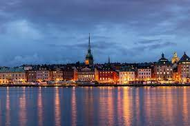

Sztokholm leży na terenie Szwecji

Ciekawostki:
Sztokholm nazywany jest często "Wenecją Północy".
Sztokholm nazywany jest także "Najmniejszym wielkim miastem świata".
Nazwa Stockholm pochodzi od słów stock - kłoda oraz holm - wyspa.
Położenie miasta powyżej 59 równoleżnika powoduje iż w najdłuższym dniu w roku słońce nie zachodzi tutaj aż przez 20 godzin i 37 minut.